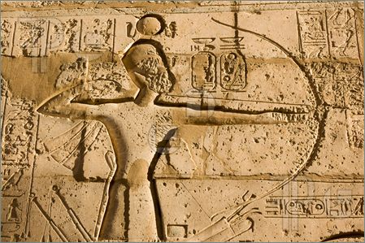

Archery throughout the ages
the History of Archery Archery has more than likley been around since the stone age when our ancestors began to use tools. However,
the sport has come a long way since it's stone age beginnings. The fact is Archery is one of the oldest skills that is still practiced today
The earliest recorded civiliation known to use Bows was the ancient Egyptians, although China also adopted archery during the Shang dynasty.
Once China adopted archery it began to spread throughout Asia. When the Chinese introduced archery to Japan in the sixth century, it had an
great influence on etiquette and techniques. Japan even centered a martial art around archery originally known as kyujutsu meaning the art of the bow,
now known as kyudo or way of the bow.

Modern Bows The Bows used today range from primitive bows closer to what was used in ancient times, to extremely high tech compund bows. As we
discussed earlier bows are one of the oldest projectile firing weapons in history, Older Longbows that were used in battle stood aroung 6 feet in height, and could effectively
fire an arrow up to 450 yards. These bows however had a draw weight of around 150lbs which was very taxing on the archer. Modern compound bows are only about 32 inches in height,
can fire an arrow as far as 550 yards and onl;y have a draw weight between 50-70lbs with an 80% letoff. While some archers still prefer to use a recurve bow, the modern version of a
longbow, most prefer the technology of a modern compund bow.
Bowhunting The bow and arrow is not only a weapon of war, but remains a popular way to hunt wild game. Hunters will use a modern bow to take down almost any type of game available for hunting.
more often than not firing their bow from an elevated position such as a tree stand or a ground blind. Bowhunters are a very tight knit community, and often share tips and tricks in order to
help a novice archer. In contrast to a rifle hunter, who may shoot effectively from ranges in excess of 200 yards, archers usually restrict shots from 2 yards to 50 yards The distance depends upon
individual ability, the target animal, the bow strength, terrain, arrow and weather. The bow hunter may walk along the ground slowly, looking for game and stalking it carefully in the final approach.
This type of slow stalking is called still hunting, Hunters often wear camouflage clothing and walk upwind so that game ahead of them cannot smell them
Competition Modern competitive archery involves shooting arrows at a target for accuracy from a set distance or distances. This is the most popular form of competitive archery worldwide and is known as
target archery, there are other forms of archery competitions that exisit such as 3D target competitons where competetors fire at targets that look like wild game or predators. Target
archery however, is currentl;y the most popular form of competition. While there is recorded evidence of archery contests taking place in china more than 3000 years ago, the modern sport of target
archery most likely originated in England during the 14th century
© Copyright 2016, Michael Christensen